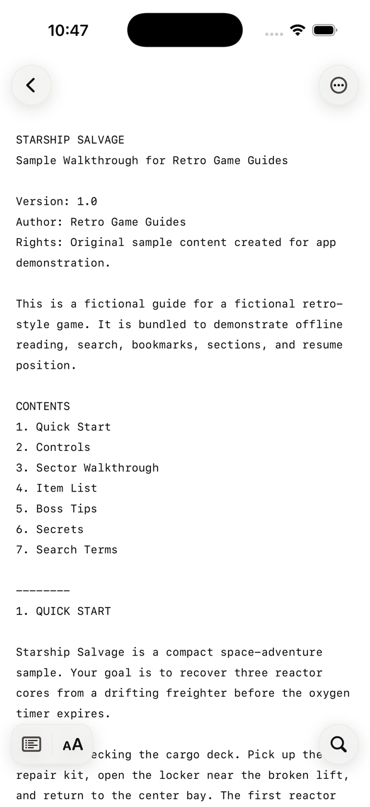
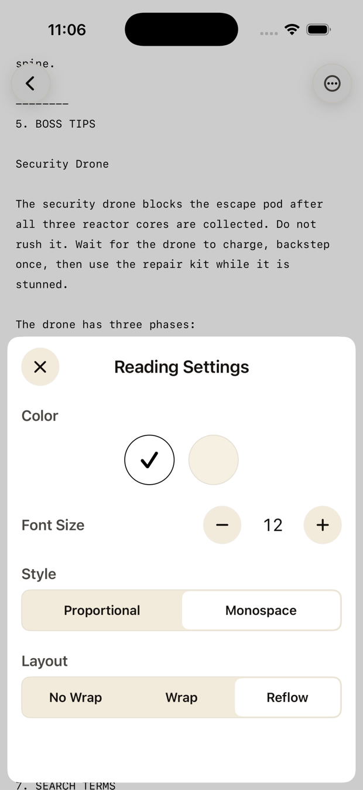
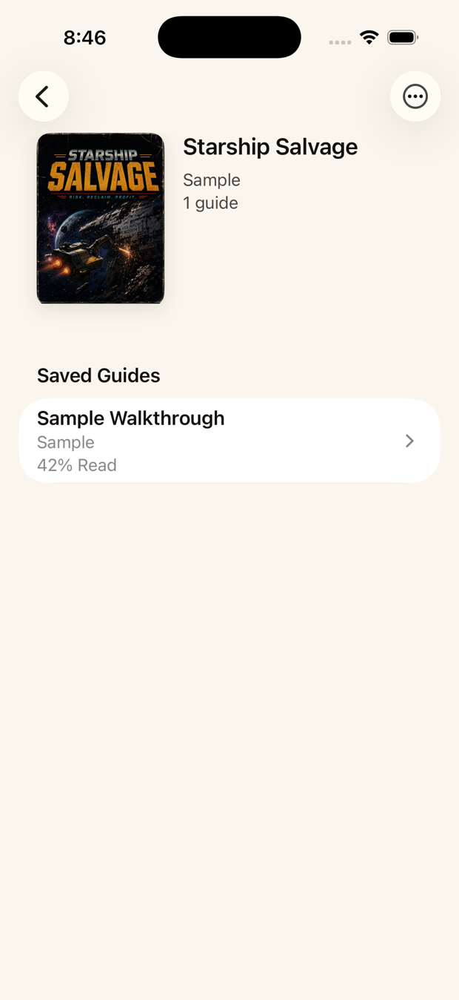
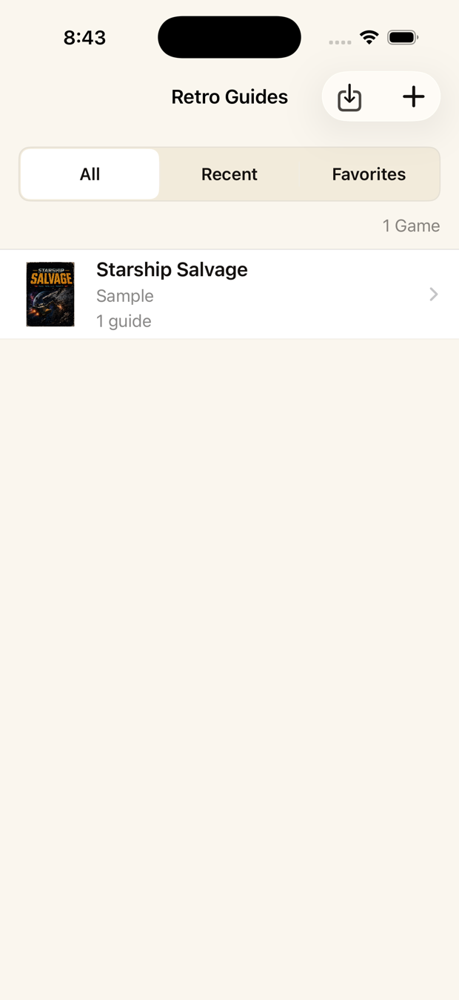
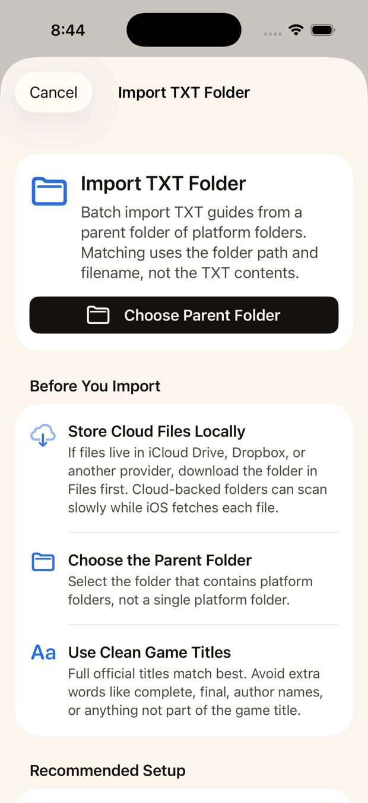

Stop fighting old TXT walkthroughs on your iPhone.
Retro Game Guides makes giant classic walkthroughs comfortable to read, searchable, and ready offline, with every guide organized by game.
Reflow, wrap & classic layouts Search & jump Offline library

Old walkthroughs were not made for phone screens.
Classic TXT guides are huge, fixed-width, and packed with hand-made formatting. Generic readers make you pinch, pan, search blindly, and lose your place.
================================== 1. QUICK START ================================== Starship Salvage is a compact space-adventure sample. Your goal is to recover three reactor cores from a drifting freighter before the oxygen timer expires. Start by checking the cargo deck. Pick up the repair kit, open the locker near the broken lift, and return to the center bay. CHAPTER 01:------------------------ Cargo Deck [C01] CHAPTER 02:------------------------ Crew Ring [C02] CHAPTER 03:------------------------ Engine Spine [C03] ____________ |Release Data\ ___________ ________________ _________________ | Country | - | Name of Game | - | Date Released | ----------- ---------------- ----------------- North Starship Salvage 6/18/26 America Europe Starship Salvage 6/18/26 ______________________________________________________| ======================================================================= 2. CONTROLS ======================================================================= D-Pad Move A Use tool / confirm B Backstep / cancel Start Open map Select Toggle objective log
-------- 1. QUICK START Starship Salvage is a compact space-adventure sample. Your goal is to recover three reactor cores from a drifting freighter before the oxygen timer expires. Start by checking the cargo deck. Pick up the repair kit, open the locker near the broken lift, and return to the center bay. CHAPTER 01: Cargo Deck [C01] CHAPTER 02: Crew Ring [C02] CHAPTER 03: Engine Spine [C03] Release Data Country | Name of Game | Date Released North America | Starship Salvage | 6/18/26 Europe | Starship Salvage | 6/18/26 -------- 2. CONTROLS D-Pad Move A Use tool / confirm B Backstep / cancel Start Open map Select Toggle objective log

A reader built specifically for old TXT walkthroughs.
Use reflow for long prose, wrap when you want a lighter touch, or classic no-wrap when maps, tables, and spacing matter.
- ✓ Reflow, wrap, or classic no-wrap — switch any time
- ✓ Adjust font size, text style, and reader theme
- ✓ Keep the right layout for each guide


A real guide library, not a file pile.
Keep multiple guides under each game, track reading progress, favorite the important ones, filter by platform, and return to recent games — all stored locally on your iPhone.
- ✓ Multiple walkthroughs, FAQs, maps, and notes under one game
- ✓ Progress, favorites, recents, and platform filters built in
- ✓ Fast library search across your whole collection

Bring in your TXT guides without busywork.
Import single guides from Files, preview a whole folder at once, or find a supported guide online and save a clean offline copy.
- ✓ Preview folder imports before they touch your library
- ✓ Skip duplicates so repeated files stay out of the way
- ✓ Find online, save offline from supported guide pages
No account. No ads. No tracking.
Saved and imported guides live on your iPhone for offline reading. Your library, progress, favorites, and custom sections stay on-device.
Your guide library stays on your iPhone — no cloud library, no sync ritual.
No account, no ads, no analytics, and no tracking.
Imports are careful with old plain-text guides and skip unsupported files.
The reader is tested against the weird formatting old walkthroughs actually use.
Online guide saving, cover art, and purchases use the network when needed. Purchases go through the App Store.
Start free. Unlock when your library grows.
Keep up to 3 games free. A one-time purchase unlocks unlimited games. No subscription. No ads.
- ✓ Unlimited games in your library
- ✓ Unlimited guides per game, always
- ✓ Batch folder import for big collections
- ✓ No subscription, no ads, no account
Questions before you import.
What file types can I import?
Plain-text .txt walkthroughs, FAQs, and guides — the kind shared
for classic games. You can import a single file, several files at once, or
preview a whole folder. Unsupported archives and unusually large files are skipped.
How does batch folder import match guides to games?
Matching uses folder names and filenames, so clean names and platform folders help. Before anything is imported, you'll see what matched, what needs review, and any duplicates. You can add platform-folder hints and rescan.
Does it work offline?
Yes. Saved and imported guides, your library, search, and your reading progress all work offline. Finding guides online, cover art, and purchases use the network when needed.
What does the free limit actually mean?
The free tier keeps up to 3 games in your library. Each of those games can hold as many guides as you like. The one-time unlock removes the game limit so you can build a larger collection and use batch import freely.
Can I save guides I find online?
You can open supported online guide pages from within the app and save a clean text snapshot for offline reading, with its source kept attached. It is a focused, you-directed save flow for supported guide pages.
Is my data private?
There's no account, no ads, and no tracking. Your library, progress, favorites, and custom sections stay on your device. Purchases are handled through the App Store. Read the full Privacy Policy.
Is this affiliated with any guide website?
No. Retro Game Guides is not affiliated with GameFAQs, GameSpot, Fandom, or any guide-hosting website. Online guide pages load only when you choose to open them, and saved guides are stored locally with attribution to their source.
Make your old walkthroughs usable again.
Save your guides, search them fast, and keep them ready offline — organized by game on your iPhone.